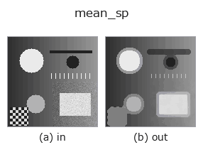

rank op• データ種: image → image
• 呼び出し: fullseye.apply(img, "mean_sp", a=0.5, b=0.5) (2-D は 1 画像 + 2 スカラつまみ a,b∈[0,1] のモデル)
• HALCON 相当: mean_sp(意味・パラメータは HALCON リファレンスが参考になる)

*図は合成の入力 128×128 で実際に走らせた出力。左が入力、右が出力(絵にならない返り値は値そのもの)。*
ロバスト平滑化フィルタ。窓内の 20 パーセンタイルと 80 パーセンタイルの平均を返す（トリム平均、trimmed mean）ことで、極端に明るい/暗い外れ値（ソルト&ペッパー雑音など）の影響を抑える。a が窓サイズを 3/5/7/9 に振る（`_k(a)`）。b は未使用。
HALCON の `mean_sp`（ソルト&ペッパーノイズを抑制する平均化演算）に相当する近似 —— 上下 20% を除いた範囲の中点をとる点で単純平均よりノイズに強いが、HALCON 固有のアルゴリズムとは実装が異なる。
• gallery2d_smoothing_rank ファミリ ガイド
• サンプルデータ カタログ(DL URL / ライセンス) — 2-D は skimage.data(BSD/public)+ 合成、3-D は実データ源(Stanford/PDS 等)の DL URL。
• 演算子の来歴・参考文献 — この op 族の元になった研究/手法の出典。
• アルゴリズムの正典(著者・年)と用途は上記ファミリ使い方ガイドに記載。
下のプログラムは実際に走ることを確かめてある(図と同じ入力)。Studio のヘルプではこのブロックがボタンになり、その場で読み込んで実行できる。
mean_sp 0.50 0.50
▸ Load this pipeline · Load & run
• gallery2d_smoothing_rank — py -3.11 examples/gallery2d_smoothing_rank.py
image を入力に取れる)identity · gaussian · mean_box · bilateral · unsharp · median · min_filter · max_filter
rank)median · min_filter · max_filter · percentile · sk_median_disk · cv_median · median_image · median_rect
*Provenance: ops.py — 2D operator registry. この per-op ノートは tools/opdocs.py md が自動生成(手編集しない)。*
© 2026 Kazufumi Furuse — Fullseye operator documentation. Licensed under Apache-2.0.